<!DOCTYPE html>
<html lang="en">
  <head>
    <meta charset="utf-8" />
    <meta name="viewport" content="width=device-width, initial-scale=1.0, maximum-scale=1.0, user-scalable=no" />

    <title>QGIS & PostGIS : Tips & Tricks</title>
    <link rel="shortcut icon" href="./favicon.ico" />
    <link rel="stylesheet" href="./dist/reset.css" />
    <link rel="stylesheet" href="./dist/reveal.css" />
    <link rel="stylesheet" href="./dist/theme/black.css" id="theme" />
    <link rel="stylesheet" href="./css/highlight/base16/zenburn.css" />

    <link rel="stylesheet" href="./css/oslandia.css" />

  </head>
  <body>
    <div class="reveal">
      <div class="slides"><section  data-markdown><script type="text/template">

<style>
img {
margin:0 !important;
vertical-align:top !important;
}
table td {
border-bottom: 0 !important;
padding-left: 0 !important;
vertical-align:top !important;
}
</style>


# PostGIS & QGIS 

### Tips & Tricks

Workshop for QGIS Swiss user group - 22/03/2023

Julien Cabieces


<style>
img {
margin:0 !important;
vertical-align:top !important;
}
table td {
border-bottom: 0 !important;
padding-left: 0 !important;
vertical-align:top !important;
}
</style>


@CabiecesJ@mapstodon.space<br/>

@troopa81

@CabiecesJ

<table>
<tr><td>
</img>
</td><td></img></td>
</table>
</script></section><section  data-markdown><script type="text/template">
### Who am I ?

<table vertical-align="middle">
<tr><td></td>
<td>
Julien Cabieces<br/>
Developpeur C++/Python<br/>
QGIS Core committer<br/>
<em>@troopa81</em><br/>
<em>@CabiecesJ</em><br/>
<em>@CabiecesJ@mapstodon.space</em>
</td>
</tr>
</table>
</script></section><section  data-markdown><script type="text/template">
## I'll talk about...

- Relations
- PostgreSQL Notify
- Processing to database
- Managing DB from browser
- Save project in database
- SQL Logging
</script></section><section  data-markdown><script type="text/template">
## Relations
</script></section><section  data-markdown><script type="text/template">
### Use case


* **NM Relation**
* Airports have airlines...
* and airlines have airports

* see [QGIS doc](https://docs.qgis.org/3.16/en/docs/user_manual/working_with_vector/attribute_table.html#introducing-many-to-many-n-m-relations) for more informations
</script></section><section  data-markdown><script type="text/template">
### Initialize data base

Create database

```shell
createdb pgqgis_tips
```

Check you manage to connect

```shell
psql pgqgis_tips
```

Get file [airports.sql](airports.sql) and load it

```shell
psql pgqgis_tips -f airports.sql
```
</script></section><section  data-markdown><script type="text/template">
### 👀 Take a look to the data model

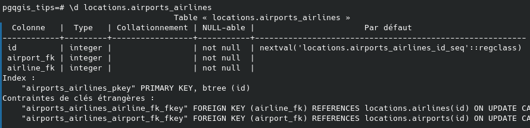

</script></section><section  data-markdown><script type="text/template">
### And now in QGIS ...

- We create the connexion : *Browser > PostgreSQL > New connexion...*
  - Name: pgqgis_tips
  - Host: 127.0.0.1
  - port: 5432
  - Database: pgqgis_tips
  - **Authentication if not trust on local connection**
  - ⚠️Check *Also list tables with no geometry*
  
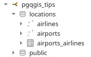
</script></section><section  data-markdown><script type="text/template">
### And initialize the project ...

- Select the 3 tables
- Then *Add selected layers to project*
- **BONUS** Add an OpenStreetMap layer
  - And change the project CRS : **3857**</script></section><section  data-markdown><script type="text/template">
### Discover relations

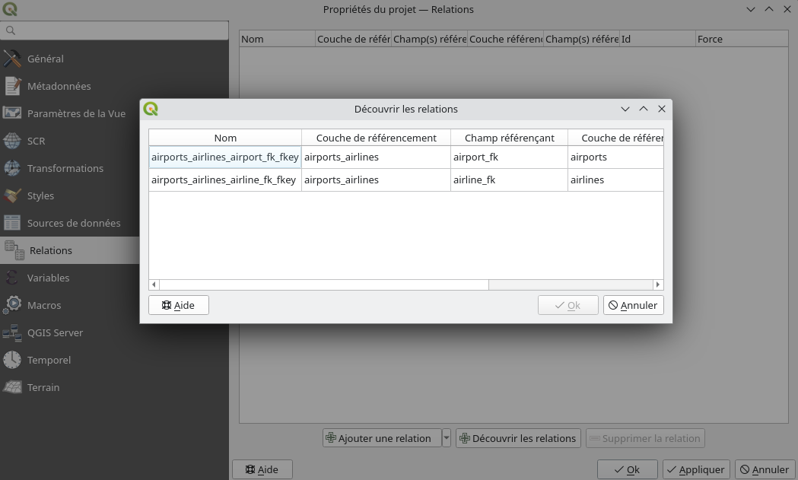

* Load all targeted layers
* *Project* > *Properties* > *Relations*
* *Discover Relations*
* Select all > *OK*
</script></section><section  data-markdown><script type="text/template">
### Open airports/airlines form

What do you see ?
</script></section><section  data-markdown><script type="text/template">
### Configure airports form

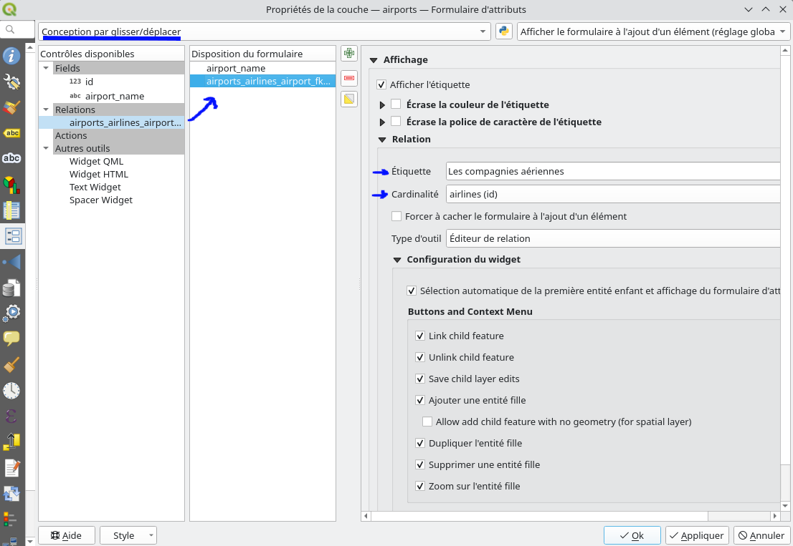
</script></section><section  data-markdown><script type="text/template">
### Add an airline

Try to add KLM (in Amsterdam) from the Toulouse airport child form

What do you see ?
</script></section><section  data-markdown><script type="text/template">
### Add an airline

- airports_airlines layer is also in editing mode
  - Not in every QGIS versions
  - Works only from the form
- Impossible to create a link with `nextval('locations.airports_airlines_id_seq'::regclass)`

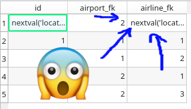
</script></section><section  data-markdown><script type="text/template">
### Evaluate primary keys

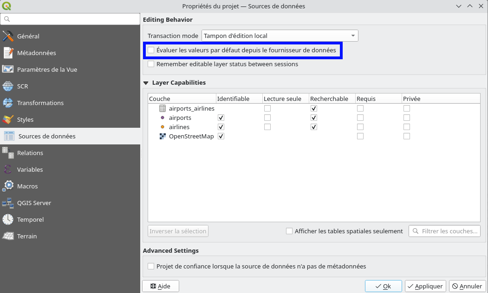
</script></section><section  data-markdown><script type="text/template">
* Relations need valid PKs, not temporary ones
  * e.g. *nextval('locations.airports_id_seq'::regclass)*
* ⚠ Not enough...
  * Edit all concerned layers 
  * Save in the appropriate order (referenced first!)
  * What if errors!
</script></section><section  data-markdown><script type="text/template">
### Automatic transaction groups

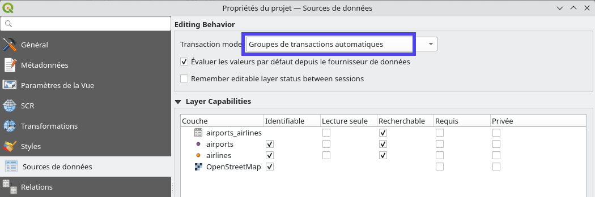
</script></section><section  data-markdown><script type="text/template">
### add-again an airline

Try to add KLM (in Amsterdam) from the Toulouse airport child form

⚠️**DON'T SAVE**⚠️

What do you see ?
</script></section><section  data-markdown><script type="text/template">
### add-again an airline

From an SQL terminal

```shell
pgqgis_tips=# select * from locations.airlines;
```

What do you see ?

Then execute the same request after saving.
</script></section><section  data-markdown><script type="text/template">
### Modify an airport

- Modify Toulouse Blagnac airport name
- ⚠️**DON'T SAVE**⚠️
- From an SQL terminal

```shell
pgqgis_tips=# update locations.airports set airport_name = 'Toulouse or not to lose!' where id = 1;
```

What do you see

Then save.
</script></section><section  data-markdown><script type="text/template">
### Automatic transaction groups

* Open a DB transaction ➡ Close it on save/finish edit
* All layers from database edited at once! 
* 👍 Evaluate triggers 
* 👎 Long living transaction ➡ [caveats](https://github.com/qgis/QGIS-Enhancement-Proposals/issues/203)
  * lock on modified rows ➡ block other transactions

<!-- on rows modifications even if it's not the same field and deletion. 
If you modify an already transaction modified row, QGIS will block (but there is a timeout), with no warning
insert is OK (but maybe index is not updated 
-->
</script></section><section  data-markdown><script type="text/template">
### Buffered Transaction Group ⭐ New in 3.26 ⭐

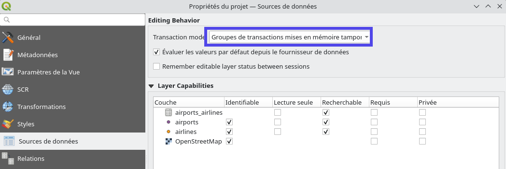
</script></section><section  data-markdown><script type="text/template">
### Here we go again...


</script></section><section  data-markdown><script type="text/template">
### Add-again an airline

Retry to add Turkish Airlines (in Istanbul) from the Lyon airport child form

⚠️**DON'T SAVE**⚠️

What do you see?
</script></section><section  data-markdown><script type="text/template">
### Add-again an airline

FROM an SQL console

```shell
pgqgis_tips=# select * from locations.airlines;
```

What do you see?

Then execute the same request after saving.
</script></section><section  data-markdown><script type="text/template">
### Re-Modify an airport

- Re-Modify Toulouse Blagnac airport name
- ⚠️**DON'T SAVE**⚠️
- From an SQL terminal

```shell
pgqgis_tips=# update locations.airports set airport_name = 'Toulouse or not to lose!' where id = 1;
```

What do you see?

Then save.
</script></section><section  data-markdown><script type="text/template">
### Buffered Transaction Group ⭐ New in 3.26 ⭐

* All modifications buffered and replayed on save
  * in the appropiate order
  * in one transaction
* 👎 Don't evaluate triggers live 
* The last one to save won!
</script></section><section  data-markdown><script type="text/template">
## PostgreSQL Notify

* Trigger a layer refresh on PostgreSQL "event"
* Insert, Update, Delete, ...
</script></section><section  data-markdown><script type="text/template">
### Create an airport from the database

in Nantes!

```shell
pgqgis_tips=# insert into locations.airports (airport_name, geom) values( 'Nantes', st_geomfromtext('POINT(-1.5546 47.2191)', 4326));
```

or delete

```shell
delete from locations.airports where id = 6
```

Nothing happen: We need to refresh or move in map!
</script></section><section  data-markdown><script type="text/template">
### PostgreSQL configuration

```sql
CREATE FUNCTION notify_modified_airports() RETURNS trigger
LANGUAGE plpgsql
AS $$ 
BEGIN 
NOTIFY qgis, 'airports_modified';
RETURN NULL;
END; 
$$;


CREATE TRIGGER notify_modified_airports 
AFTER INSERT OR UPDATE OR DELETE OR TRUNCATE ON locations.airports
FOR EACH STATEMENT EXECUTE PROCEDURE notify_modified_airports();
```
</script></section><section  data-markdown><script type="text/template">
### QGIS configuration

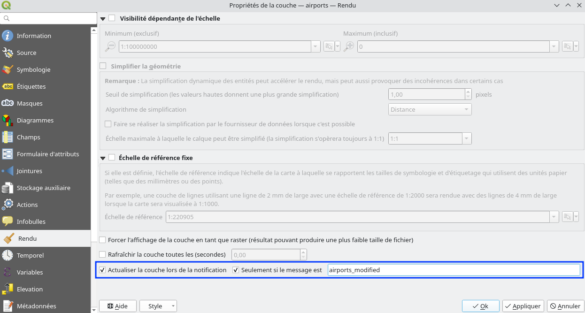</img>
</script></section><section  data-markdown><script type="text/template">
### Modify database

QGIS refresh all by itself!
</script></section><section  data-markdown><script type="text/template">
### Not only refresh 

- **How ?** With a little bit of Python magic 🪄
- **Where ?** Plugin / Startup script / Macros / Python console 
- **To do what ?** ✨ What you want !!!*

Example: from the Python console (*Extensions > Console Python*)

```python
def onNotify():
   iface.messageBar().pushInfo("Notify", "Points updated")

iface.activeLayer().dataProvider().notify.connect(onNotify)
```

<small>*Within the scope of what the QGIS API offers</small>
</script></section><section  data-markdown><script type="text/template">
### 📝 Practice 

Add an annotation for every new airline.
</script></section><section  data-markdown><script type="text/template">
### Answer

Send new line id...

```sql
CREATE FUNCTION notify_new_airlines() RETURNS trigger
LANGUAGE plpgsql
AS $$
DECLARE
  v_txt text;
BEGIN
  v_txt := format('new_airlines %s', NEW.id);
PERFORM pg_notify('qgis', v_txt);
RETURN NULL;
END; 
$$;


CREATE TRIGGER notify_modified_airports 
AFTER INSERT ON locations.airlines
FOR EACH ROW EXECUTE PROCEDURE notify_new_airlines();
```

For every line
</script></section><section  data-markdown><script type="text/template">
### Answer

A little bit of Python and QGIS API

```python
def createAnnotationOnNotify(msg):
    id = int(msg[13:len(msg)])
    airlines = QgsProject.instance().mapLayersByName("airlines")[0]
    new_feat = airlines.getFeature(id)
    
    annotation = QgsTextAnnotation()
    annotation.setDocument(QTextDocument("✨✨New airline {} here !! ✈✈ ".format(new_feat["airline_name"])))
    annotation.setMapPosition(new_feat.geometry().asPoint())
    annotation.setMapPositionCrs(airlines.sourceCrs())
    annotation.setFrameSizeMm(QSizeF(50,25))

    QgsProject.instance().annotationManager().addAnnotation( annotation );
    
QgsProject.instance().mapLayersByName("airlines")[0].dataProvider().notify.connect(createAnnotationOnNotify)
```
</script></section><section  data-markdown><script type="text/template">
### Answer

It works!

```sql
pgqgis_tips=# insert into locations.airlines (airline_name, geom) values( 'Iberia', st_geomfromtext('POINT(2.1512 41.3894)', 4326));
```

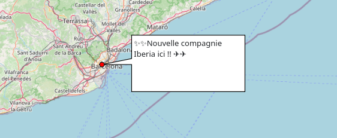
</script></section><section  data-markdown><script type="text/template">
### Refresh other layers ?

- **Use case** : Refresh nodes according to intersecting lines using triggers
- **NO !!** : Prefer [data dependencies](https://oslandia.com/en/2020/01/10/en-qgis-snapping-improvements)

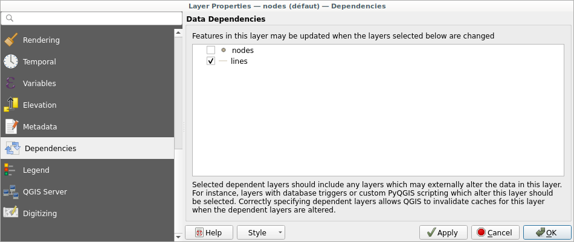</img>
</script></section><section  data-markdown><script type="text/template">
## Processing to database

Output processing result directly to database
</script></section><section  data-markdown><script type="text/template">
### Generate Voronoï Polygons...

... on airlines, directly in database

<small>Why? Because it's beautiful🌺🌸</small>
</script></section><section  data-markdown><script type="text/template">
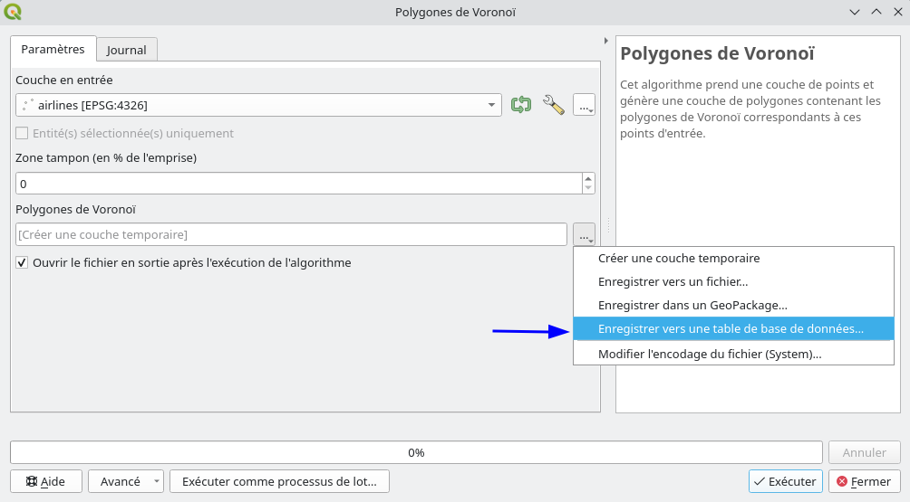
</script></section><section  data-markdown><script type="text/template">
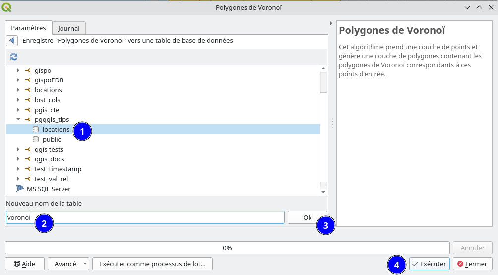
</script></section><section  data-markdown><script type="text/template">
### Check in database


```shell
pgqgis_tips=# \d locations.voronoi
                           Table « locations.voronoi »
   Colonne    |          Type          | Collationnement | NULL-able | Par défaut 
--------------+------------------------+-----------------+-----------+------------
 id           | integer                |                 | not null  | 
 geom         | geometry(Polygon,4326) |                 |           | 
 airline_name | character varying      |                 |           | 
Index :
    "voronoi_pkey" PRIMARY KEY, btree (id)

pgqgis_tips=# select count(*) from locations.voronoi;
 count 
-------
     8
(1 line)

```
</script></section><section  data-markdown><script type="text/template">

## Manage database from the browser

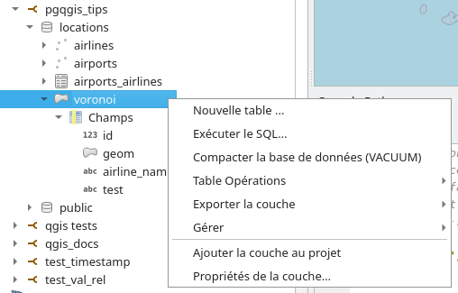</img>
</script></section><section  data-markdown><script type="text/template">
### 📝 Practice

- Add a text field to the voronoi table
- Delete that field
- Execute a request to get the first 2 airlines
- ... and show it in QGIS map canvas
- Export voronoi table in a geopackage file
- Delete voronoi table
- Create a table / schema

**And check what happens in database**
</script></section><section  data-markdown><script type="text/template">
### Does it replace DB Manager ?

* Yes ... but [not completely](https://lists.osgeo.org/pipermail/qgis-developer/2022-June/064850.html)
* Some features are missing
  * Create/Manage constraint
  * Create view from query
  * Modify a column
  * Logging table (Is someone using this ?!!) 
  * ...
</script></section><section  data-markdown><script type="text/template">
### DB Manager

* No use of the QGIS provider API
  * Duplicate code in Python
* Not-well-tested

**Prefer the browser feature everytime possible!**
</script></section><section  data-markdown><script type="text/template">
## Save project in database
</script></section><section  data-markdown><script type="text/template">
### Enable option

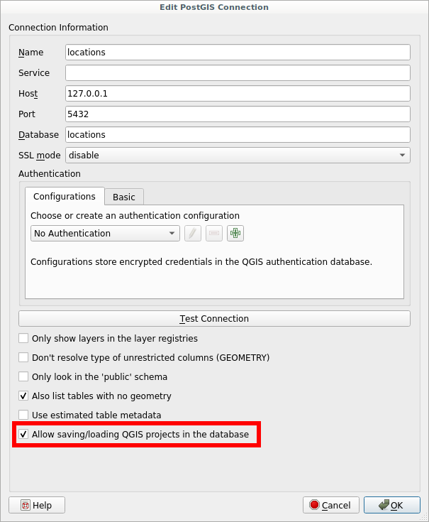</img>
</script></section><section  data-markdown><script type="text/template">
*Project* > *Save To* > *PostgreSQL...*

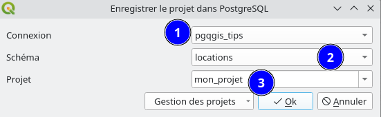</img>

*Project* > *Open From* > *PostgreSQL...*
</script></section><section  data-markdown><script type="text/template">
### Check in database

```sql
pgqgis_tips=# \d locations.qgis_projects
              Table « locations.qgis_projects »
 Colonne  | Type  | Collationnement | NULL-able | Par défaut 
----------+-------+-----------------+-----------+------------
 name     | text  |                 | not null  | 
 metadata | jsonb |                 |           | 
 content  | bytea |                 |           | 
Index :
    "qgis_projects_pkey" PRIMARY KEY, btree (name)

pgqgis_tips=# select name, metadata from locations.qgis_projects ; 
    name    |                                       metadata                                       
------------+--------------------------------------------------------------------------------------
 mon_projet | {"last_modified_time": "2023-03-09 10:44:45.330186", "last_modified_user": "julien"}
(1 line)
```
</script></section><section  data-markdown><script type="text/template">
### External files

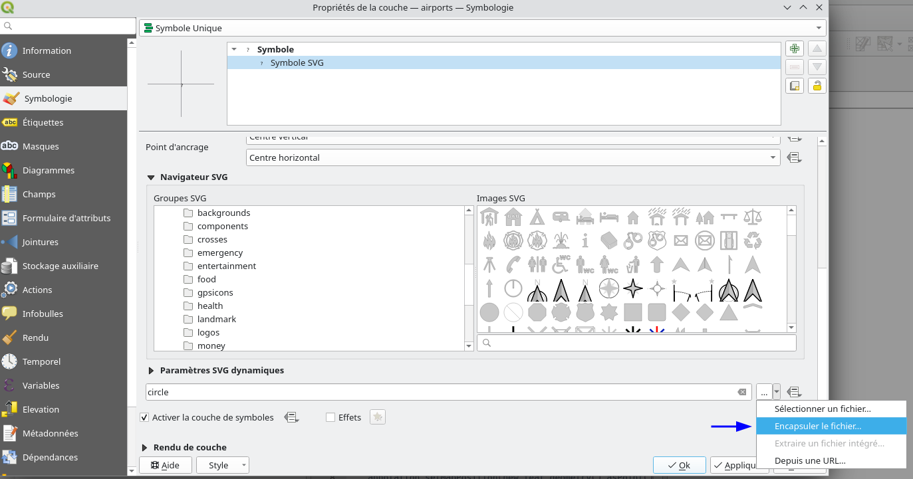</img>

* You can embed external file in project (SVG for instance) 
</script></section><section  data-markdown><script type="text/template">
## SQL Logging ⭐ New in 3.26 ⭐

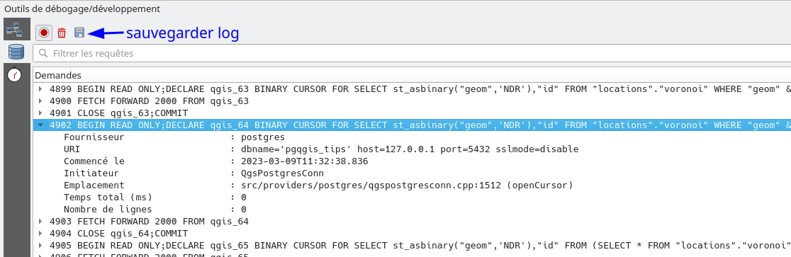</img>

- *View* > *Panels* > *Debugging/Development Tools*
- Log ALL SQL requests (select, insert, update...)
- Log also HTTP requests
</script></section><section  data-markdown><script type="text/template">
### Test log tool

- Enable logging
- Clean
- Repeat some workshop actions!
</script></section><section  data-markdown><script type="text/template">
### Parse log files

- Save logs
- Use [jq](https://stedolan.github.io/jq/) in command line


Total execution time in ms
```shell
jq '[.[]."Total time (ms)" | tonumber] | add' ~/test.json
```

Different requests
```shell
jq -r '.[]."SQL"' ~/test.json | grep -v "CLOSE qgis_"  |grep -v "FETCH FORWARD " | sed "s/\\\\//g" | sed "s/BEGIN READ ONLY.*CURSOR FOR //" | sort | uniq -c
```

Different requests sorted by execution time
```
jq -r '.[] | [ ."Total time (ms)", ."SQL"]|join(" ")' ~/test.json | grep -v "CLOSE qgis_"  |grep -v "FETCH FORWARD " | sed "s/\\\\//g" | sed "s/BEGIN READ ONLY.*CURSOR FOR //" | sort -nr
```
</script></section><section  data-markdown><script type="text/template">
# Questions

### PostGIS & QGIS : Tips & Tricks

Workshop for QGIS Swiss user group - 22/03/2023

Julien Cabieces


<style>
img {
margin:0 !important;
vertical-align:top !important;
}
table td {
border-bottom: 0 !important;
padding-left: 0 !important;
vertical-align:top !important;
}
</style>


@CabiecesJ@mapstodon.space<br/>

@troopa81

@CabiecesJ

<table>
<tr><td>
</img>
</td><td></img></td>
</table>
</script></section></div>
    </div>

    <script src="./dist/reveal.js"></script>

    <script src="./plugin/markdown/markdown.js"></script>
    <script src="./plugin/highlight/highlight.js"></script>
    <script src="./plugin/zoom/zoom.js"></script>
    <script src="./plugin/notes/notes.js"></script>
    <script src="./plugin/math/math.js"></script>
    <script>
      function extend() {
        var target = {};
        for (var i = 0; i < arguments.length; i++) {
          var source = arguments[i];
          for (var key in source) {
            if (source.hasOwnProperty(key)) {
              target[key] = source[key];
            }
          }
        }
        return target;
      }

      // default options to init reveal.js
      var defaultOptions = {
        controls: true,
        progress: true,
        history: true,
        center: true,
        transition: 'default', // none/fade/slide/convex/concave/zoom
        plugins: [
          RevealMarkdown,
          RevealHighlight,
          RevealZoom,
          RevealNotes,
          RevealMath
        ]
      };

      // options from URL query string
      var queryOptions = Reveal().getQueryHash() || {};

      var options = extend(defaultOptions, {}, queryOptions);
    </script>


    <script>
      Reveal.initialize(options);
    </script>
  </body>
</html>
